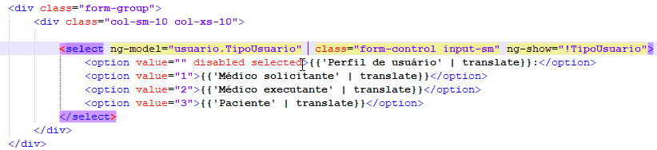

Caso o cliente deseje alterar a ordem de login (paciente, executante e solicitante), é necessário acessar o caminho: C:\mdmv\Portal\Client\app\view\partial e editar o arquivo "loginForm.html", inserindo o parâmetro: ng-init="usuario.TipoUsuario = 3" da seguinte forma:
OBS: Inserir valores de acordo com o tipo de usuário:
"1" - Médico Solicitante
"2" - Médico Executante
"3" - Paciente
